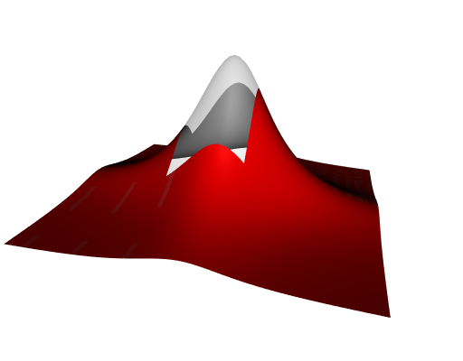

Interpolating non-gridded data
I still wrapped a part of the C++ library CGAL in a R package, namely interpolation.
The purpose of this package is to perform interpolation of bivariate functions. As compared to existing packages, it can do more: it can interpolate vector-valued functions (with dimension two or three), and it does not require that the given data are gridded. I will illustrate this second point here.
First, let’s plot a surface \(z = f(x, y)\).
# make a square grid
x <- y <- seq(-3, 3, by = 0.1)
Grid <- expand.grid(X = x, Y = y)
# make surface
z <- with(Grid, 30 * dcauchy(X) * dcauchy(Y))
# plot
library(deldir)
delxyz <- deldir(Grid[["X"]], Grid[["Y"]], z = z)
library(rgl)
open3d(windowRect = 50 + c(0, 0, 512, 512))
persp3d(delxyz, color = "red")Now we will make a hole in this surface, and then we will interpolate it.
# make a hole in the grid: the square [-0.5, 1]x[-0.5, 1]
toremove <- with(Grid, X > -0.5 & X < 1 & Y > -0.5 & Y < 1)
GridWithHole <- Grid[!toremove, ]
# plot this grid
plot(GridWithHole[["X"]], GridWithHole[["Y"]], pch = 19, asp = 1)Now, to plot the surface with the hole, I will use a constrained Delaunay triangulation. I didn’t find a more straightforward way.
# constraint edges: squares [-0.5, 1]x[-0.5, 1] and [-3, 3]x[-3, 3]
Constraints <- data.frame(
X = c(-0.5, 1, 1, -0.5, -3, 3, 3, -3),
Y = c(-0.5, -0.5, 1, 1, -3, -3, 3, 3)
)
# add constraint edges to the grid with the hole
GridWithHole <- rbind(Constraints, GridWithHole)
# remove duplicated points
GridWithHole <- GridWithHole[!duplicated(GridWithHole), ]
# vertices
points <- cbind(GridWithHole[["X"]], GridWithHole[["Y"]])
# constraint edges must be given by vertex indices
edges <- rbind(c(1L, 2L), c(2L, 3L), c(3L, 4L), c(4L, 1L)) # the hole
edges <- rbind(edges, edges + 4L) # the outer square
# perform constrained Delaunay triangulation
library(delaunay)
del <- delaunay(points, constraints = edges)Note that the delaunay package is also a wrapper of CGAL.
This Delaunay triangulation provides triangular faces that we can use to create a 3D rgl mesh.
# create surface plot
z <- with(GridWithHole, 30 * dcauchy(X) * dcauchy(Y))
vertices <- cbind(points, z)
rmesh <- tmesh3d(
vertices = t(vertices),
indices = t(del[["faces"]]),
homogeneous = FALSE
)
rmesh <- addNormals(rmesh)
# we plot the front side in red and the back side in gray
open3d(windowRect = 50 + c(0, 0, 512, 512))
shade3d(rmesh, color = "red", back = "cull")
shade3d(rmesh, color = "gray", front = "cull")
persp3d(delxyz, add = TRUE, alpha = 0.2)
Good. Now let’s interpolate.
# make the interpolating function
library(interpolation)
fun <- interpfun(
GridWithHole[["X"]], GridWithHole[["Y"]], z, method = "linear"
)
# make a grid of the hole
xnew <- ynew <- seq(-0.5, 1, by = 0.04)
griddedHole <- expand.grid(X = xnew, Y = ynew)
# interpolation
znew <- fun(griddedHole[["X"]], griddedHole[["Y"]])
# new 3D data
newPoints <- cbind(griddedHole[["X"]], griddedHole[["Y"]], znew)
# plot
open3d(windowRect = 50 + c(0, 0, 512, 512))
shade3d(rmesh, color = "red", back = "cull")
shade3d(rmesh, color = "gray", front = "cull")
points3d(newPoints)Not very nice, you think? Right, but I used the linear method of interpolation here. The interpolation package also provides the Sibson method, this one is not linear. One just has to repeat the above code but starting with:
fun <- interpfun(
GridWithHole[["X"]], GridWithHole[["Y"]], z, method = "sibson"
)And we obtain:
This is not exactly the true curve, but nevertheless this is impressive.